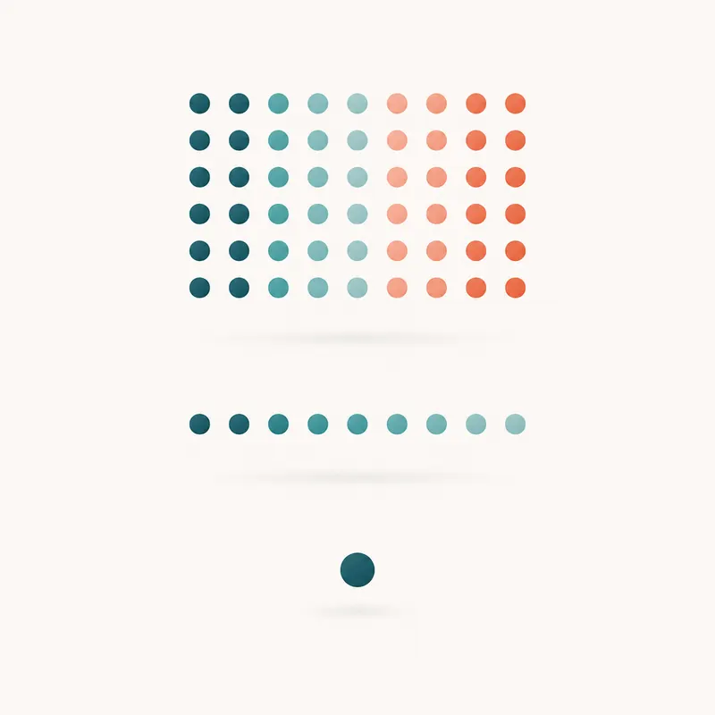

Unidad 1 · Inicio: R para estudiantes de medicina
R y RStudio
R es un lenguaje estadistico. RStudio es el entorno que facilita escribir scripts, ejecutar codigo, ver objetos, instalar paquetes y generar reportes.
Comandos minimos

2 + 2
edad <- c(22, 45, 63, 38)
mean(edad)
summary(edad)
sessionInfo()Idea clave
El objetivo inicial no es memorizar comandos, sino reconocer que cada instruccion recibe un dato, hace una operacion y devuelve un resultado interpretable.